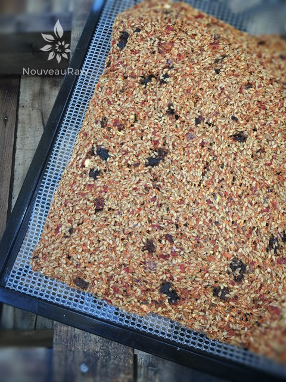

Veggie Flax Crackers

~ raw, vegan, gluten-free, nut-free ~
Flax crackers are a staple in our household. The warm, earthy and subtly nutty flavor of flax seeds combined with an abundance of omega-3 fatty acids makes them a great healthy snack.
Research indicates that for those who do not eat fish or wish to take fish oil supplements, flaxseed oil does provide a good alternative. Omega-3 fats can help reduce the inflammation that is a significant factor in conditions such as asthma, osteoarthritis, rheumatoid arthritis, migraine headaches, and osteoporosis.
For you glorious women out there who are in their prime, flaxseed Reduces Hot Flashes almost 60%! Goodness, there are tons of google sites that will tell you copious amounts of health benefits in consuming flax, but today I will stop here and get on with how to make some delicious crackers. You will need your dehydrator and food processor and just a little bit of time.
To be honest, it is really hard for me to even follow a recipe when it comes to flax crackers. Often I just open the fridge and start cleaning it out. It is a great time to start using some of those veggies that are less than perfect.
For example, a soft zucchini, a tomato that is less than firm, etc. I made a batch of flax crackers that my husband fell in love with. When he asked what they were called, I simply replied, “Everything but the kitchen sink flax crackers!” I share all that just to inspire you not to be afraid of breaking out of a set recipe and learn to tweak it by depending on what ingredients you have on hand!
- 2 cups flax seeds
- 3 cups of water
- 1 1/2 cups broccoli
- 1 1/2 cup diced (172 g) red bell pepper
- 1/2 cup (32 g) sun-dried tomatoes or fresh salsa
- 1 cup diced (174 g) large onion, chopped
- 1 cup (140 g) diced carrots
- 3 cups (380 g) chopped zucchini
- Juice of 1 lemon
- 1 clove of fresh garlic, peeled
- 1 tsp Himalayan pink salt
Preparation:
- In a large bowl combine the flax seeds and water. Stir them really well, making sure to work out any lumps. Set aside while you prepare the rest of the ingredients.
- In the food processor, fitted with the “S” blade, combine the flax seeds, broccoli, bell pepper, sun-dried tomatoes, onion, carrots, zucchini, lemon, garlic, and salt. Process together, stopping a few times to scrape down the sides.
- I used sun-dried tomatoes that we dry (not packed in oil). If they appear too dry to blend into the mixture, re-hydrate them in warm water until soft. Discard the soak water.
- Pour the veggie mixture into the bowl with the soaking flax seeds. Stir well.
- If there is any liquid floating on top, let it sit longer until it thickens up.
- Press mixture flat onto teflex sheets on top of your mesh dehydrator trays. It will fill 2 trays.
- Score the size of crackers you’d like with a knife or spatula before dehydrating. Be careful not to cut into the non-stick sheets.
- Dehydrate at 145 degrees (F) for 1 hour, then reduce to 115 degrees (F) for 8+/- hours, until crispy and dry.
- Partway through the drying process, flip the crackers over onto the mesh sheet and peel off the non-stick sheet. This will allow air to circulate better and speed up the dry time.
- Store in an airtight container. Flax crackers can last months if stored properly, well that is if they don’t get eaten by then.
Culinary Explanations:
- Why do I start the dehydrator at 145 degrees (F)? Click (here) to learn the reason behind this.
- When working with fresh ingredients, it is important to taste test as you build a recipe. Learn why (here).
- Don’t own a dehydrator? Learn how to use your oven (here). I do however truly believe that it is a worthwhile investment. Click (here) to learn what I use.

I wasn’t able to score these into crackers shapes, so they dried as one large sheet. I just broke them up into rustic cracker sizes
© AmieSue.com